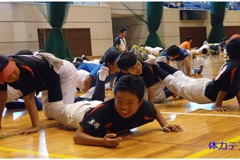

2019年度 つくい散策とたけのこ掘り（津久井地域事業）

| 日程 | 2019年4月28日（日） |
| 場所 | 津久井生涯学習センター |
| 対象 | 市内に在住・在勤・在学の小学生以上（小学生は保護者同伴） |
| 定員 | 30人（抽選） |
| 費用 | 1,000円/人（当日徴収） |
| 持ち物 | 運動のできる服装、飲み物、軍手、新聞紙、袋、雨具 |
| 申込方法 | 広報さがみはら「市体育協会からのお知らせ」の各号で各種目ごとに掲載 |
| その他 | 当日雨天の場合、実施の可否については、午前7時以降に（公財）相模原市体育協会津久井連絡所（☎ 042-705-5142）へ問い合わせてください。 天候及びたけのこの生育状況により、たけのこ掘りの体験ができない場合は中止とし、開催日の2日前までに参加者へ連絡します。 |
| 問い合わせ先 | 市体育協会 津久井連絡所 ☎042-705-5142 |
| 他年度のレポート |